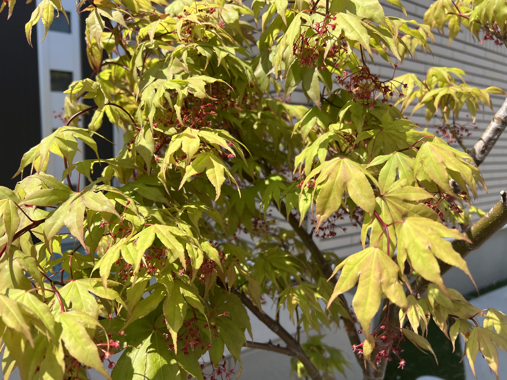
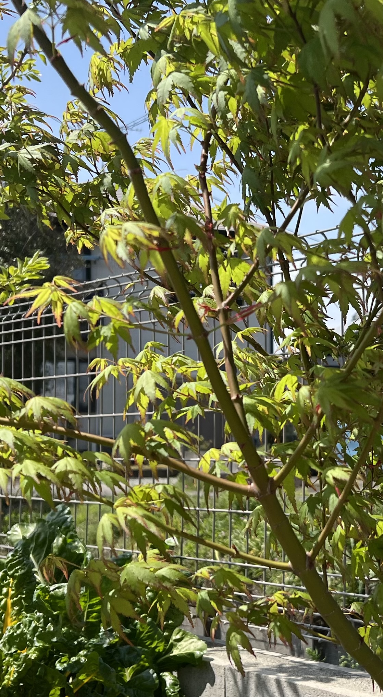
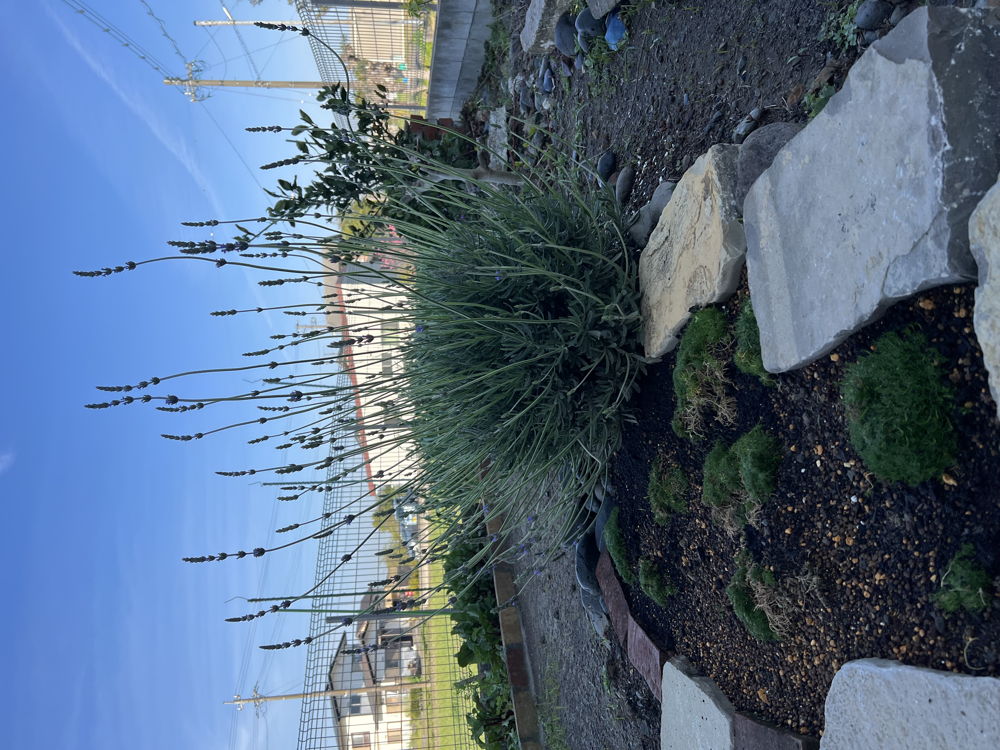

Japanese Maple & The English Lavender
The Japanese maple is a beautiful unique tree thats belongs to deep four seasonal colors. The English Lavender is a fragrant herb with purple flowers that adds color and cent to the garden.
This space balances structure and softness. Lavender grows gently beneath the quiet presence of a Japanese maple tree.Also elegant stepping stones are way to fulfill your joy and happiness.
The Japanese maple is a beautiful unique tree thats belongs to deep four seasonal colors. The English Lavender is a fragrant herb with purple flowers that adds color and cent to the garden.



© 2026 Quiet Garden. All rights reserved.